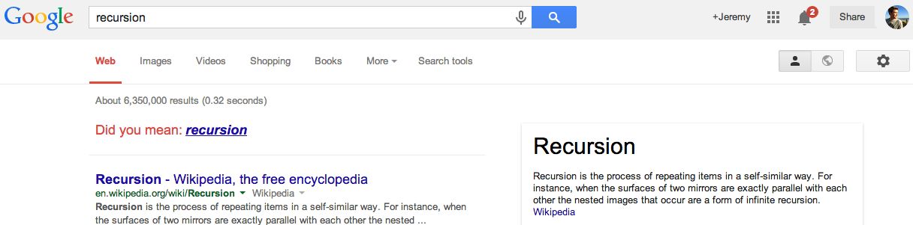

Recursion
Recursion is "the process of repeating items in a self-similar way" accoriding to good ol' Wikipedia. But what the heck does that mean???
Think of it like this - two mirrors facing one another parallel would be an instance of infinite recursion. The reflection would be reflected in the image displayed by the other mirror forever and ever and ever. Get it? No? Hmm. How about like this then:

Notice how when you Google recursion, it says "Did you mean recursion?" If you click it, it still says that on the new page that's loaded.
Alright, since this is for DBC, I better try to explain how this is important to your friendly neighborhood coder-man. We already know you can define a function and that you can call another function within that function's definition. Now, what if you could define a function or method that calls itself in its definition??? Well, that's RECURSION!
Recursion is a way of defining functions in which the function is applied inside its own definition. For example, though you could easily write a "for loop" in JavaScript to do a factorial function, you could also write it recursively like so:
factorial(N) {See?! Recursion can be a good alternative to normal iteration sometimes. For example, if you're reading this and haven't done the Fibonacci challenge yet, try giving thinking of the sequence of numbers as being defined recursively. So, F(0)=0 and F(1)=1, but every other number after the first two is he previous two added together. Then, F(3)=F(2)+F(1), and, since we know F(2)=F(1)+F(0), that'd be the same as saying F(3)=F(1)+F(0)+F(1). So, F(3)=2. This could be done with any number in the Fibonacci sequence - F(n)=F(n-1)+F(n-2).
if (N==1) return 1;
return N * factorial(N-1);
}
Hopefully, you understand recursion a bit better now. If not, see this blog post ;)